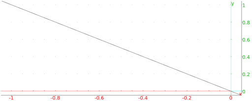

13.7.5 Parallel lines in the plane: parallel
See Section 14.5.5 for parallel lines in space.
The parallel command finds a line parallel to a given line.
-
parallel takes two arguments:
- parallel(p,ℓ) returns and draws the line
parallel to ℓ passing through p.
Example
Input:
parallel(0,line(1,i))
Output:
